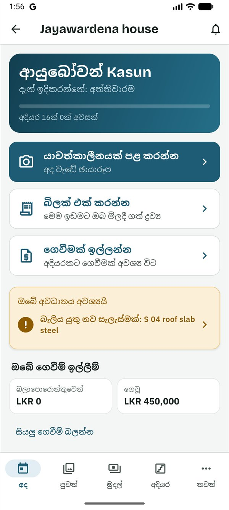
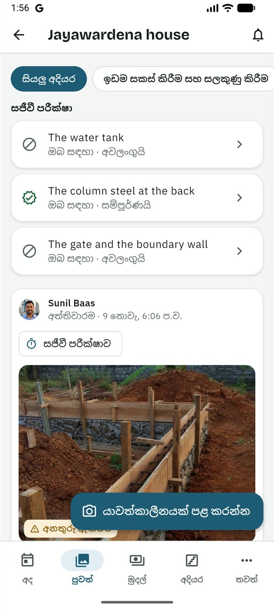
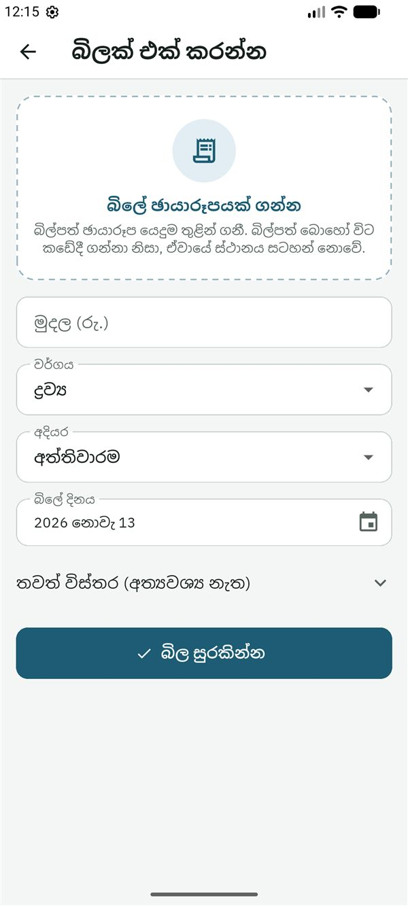
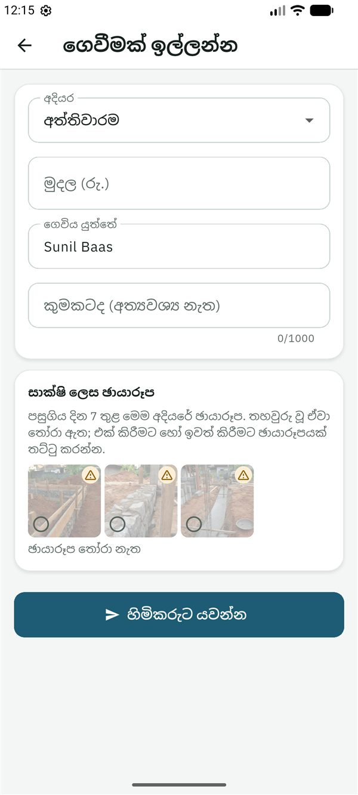

SiteProof
SiteProofමෙම සිංහල පාඨය කෙටුම්පතකි. යෙදුමේ සිංහල මෙන්ම, සිංහල මව් භාෂාව වන කෙනෙකු එය තවම සමාලෝචනය කර නැත.
This Sinhala text is a draft awaiting review by a native speaker, like the app's Sinhala.
මාර්ගෝපදේශ › කොන්ත්රාත්කරු
කොන්ත්රාත්කරුවන් සඳහා මාර්ගෝපදේශය
Read in English (ඉංග්රීසියෙන් කියවන්න)
මෙම මාර්ගෝපදේශය නිවස ඉදි කරන කොන්ත්රාත්කරු (බාස්) සඳහායි. ඔබ වැඩේ ඡායාරූප දමයි, ඔබ මිලදී ගන්නා දේවල බිල්පත් එක් කරයි, සාක්ෂි ලෙස ඡායාරූප සමඟ හිමිකරුගෙන් ගෙවීම් ඉල්ලයි. හිමිකරුගේ අයවැය ඔබට නොපෙනේ. ඔබට SiteProof නොමිලේ.
ඔබට කළ හැකි සහ කළ නොහැකි දේ
ඔබට කළ හැකි දේ
- ඡායාරූප සහ හඬ සටහනක් සමඟ යාවත්කාලීන පළ කිරීම.
- වැඩබිමට ඔබ මිලදී ගන්නා දේවල බිල්පත් එක් කිරීම, සහ ඔබේම බිල්පත් බැලීම.
- ගෙවීම් ඉල්ලීම, සහ ඔබේම ගෙවීම් ඉල්ලීම් බැලීම.
- ගිවිසුමේ ගෙවීම් කාලසටහන, සහ ලිපිගොනු තුළ ගිවිසුමම බැලීම.
- ඔබේ මිල ගණන් පත්රයෙන් හෝ BOQ එකෙන් අදියර සහ මුදල් යෝජනා කිරීම.
- හිමිකරුගේ තීරණයට වැඩේ වෙනසක් සටහන් කිරීම (Plus).
- අදියර ආරම්භ කිරීම සහ අවසන් කිරීම, සහ අදියර පරීක්ෂාවකින් සොයාගත් දේ නිවැරදි කිරීම.
- නව සැලසුමක් දුටු බව තහවුරු කිරීම.
- වැඩබිමේ සිටින්නේ ඔබ පමණක් නම්, ස්ථානය සලකුණු කිරීම.
- යාවත්කාලීන, බිල්පත්, ගෙවීම් සහ සැලසුම් ගැන අදහස් දැක්වීම.
ඔබට කළ නොහැකි දේ
- හිමිකරුගේ අයවැය, හෝ අන් අයගේ බිල්පත් සහ ගෙවීම් ඉල්ලීම් බැලීම.
- ගෙවීමක් අනුමත කිරීම හෝ ඔබේම ගෙවීම ගෙව්වා ලෙස සලකුණු කිරීම: තීරණය කරන්නේ හිමිකරුයි, ගෙව්වා ලෙස සලකුණු කරන්නේ හිමිකරු හෝ ස්ථානයේ සිටින පවුලේ සාමාජිකයායි.
- අයට ආරාධනා කිරීම හෝ ඉවත් කිරීම, හෝ ව්යාපෘතිය, එහි අදියර සහ අයවැය වෙනස් කිරීම (ඒ වෙනුවට ඔබ අදියර යෝජනා කරයි).
- සැලසුම් සහ ලිපිගොනු එක් කිරීම.
- ඔබේම අදියර පරීක්ෂා කිරීම හෝ අනුමත කිරීම, හෝ සජීවී පරීක්ෂාවක් ඉල්ලීම.
ආරම්භ කිරීම
- හිමිකරු ඔබට ආරාධනා කරයි. ඔබට සිංහලෙන් සහ ඉංග්රීසියෙන් පණිවිඩයක්, සාමාන්යයෙන් WhatsApp හරහා, අක්ෂර 6ක කේතයක් සමඟ ලැබේ. කේතය එක් වරක් පමණක්, දින 7ක් වලංගුයි.
- Google Play වෙතින් SiteProof ස්ථාපනය කරන්න. SiteProof පරීක්ෂා කරන කාලය තුළ, එය ස්ථාපනය කළ හැක්කේ ආරාධනා ලැබූ පරීක්ෂකයින්ට පමණි. දැනට එය Android දුරකථන සඳහා පමණි.
- සිංහල හෝ English තෝරා, කෙටි හැඳින්වීම කියවන්න හෝ මඟ හරින්න ඔබන්න.
- ඇතුළු වන්න: ඔබේ ඊමේල් ලිපිනය ටයිප් කර කේතය යවන්න ඔබා, ඊමේල් එකේ ඇති ඉලක්කම් 6ක කේතය ටයිප් කර තහවුරු කරන්න ඔබන්න. නැතහොත් Google සමඟ ඉදිරියට යන්න ඔබන්න. මුරපදයක් නැත.
- ඔබ ගැන යටතේ ඔබේ නම සහ ඔබ ජීවත් වන රට පුරවා ඉදිරියට ඔබන්න. කැමති නම්, පළමුව ඉහළින් ඇති ඡායාරූපයක් එක් කරන්න ඔබන්න: ඡායාරූපයක් ගන්න හෝ ඔබේ ඡායාරූපවලින් තෝරන්න, ඔබේ මුහුණ රවුම තුළට එන ලෙස එය ගෙනයන්න, විශාල කරන්න, ඉන්පසු මෙම ඡායාරූපය යොදන්න ඔබන්න. එය දකින්නේ ඔබේ ව්යාපෘතිවල සිටින අය පමණි; පසුව සැකසුම්වලින් එය වෙනස් කිරීමට හෝ ඉවත් කිරීමට හැක.
- මුල් තිරයේ ⋮ → කේතයකින් එක්වන්න ඔබන්න. කේතය ටයිප් කර කේතය පරීක්ෂා කරන්න ඔබන්න. ඔබට කොන්ත්රාත්කරු ලෙස ආරාධනා කළේ කවුදැයි යෙදුම පෙන්වයි. මෙම ව්යාපෘතියට එක්වන්න ඔබන්න.
ඔබේ ව්යාපෘති මුල් තිරයේ කොන්ත්රාත්කරු ලේබලය සමඟ ඇත; ඔබට වෙනත් භූමිකා වලින් ව්යාපෘති ද ඇත්නම් ඒවා ඔබේ වැඩ යටතේ ඇත. ඔබ වෙනුවෙන් යමක් රැඳී ඇති ව්යාපෘති මුලින්ම පෙන්වන අතර, සෑම කාඩ්පතකම ඊළඟ එකඟ වූ ගෙවීමේ නම පෙන්වයි. ව්යාපෘතියක් අද ටැබයෙන් විවෘත වේ.
අද තිරය
අද තිරය දැන් ඉදිකරන්නේ කුමක්දැයි කියා (දැන් ඉදිකරන්නේ: …), විශාල බොත්තම් තුනක් පෙන්වයි: යාවත්කාලීනයක් පළ කරන්න, බිලක් එක් කරන්න (මෙම ඉඩමට ඔබ මිලදී ගත් ද්රව්ය) සහ ගෙවීමක් ඉල්ලන්න. පහළින් ඔබට ඇති සජීවී පරීක්ෂා, ඔබේ අවධානය අවශ්යයි (බැලිය යුතු නව සැලසුමක්, නිවැරදි කළ යුතු දේ, හිමිකරුගේ ප්රශ්න) සහ රැඳී ඇති හා ගෙවූ දේ සමඟ ඔබේ ගෙවීම් ඉල්ලීම් ඇත.

යාවත්කාලීනයක් පළ කරන්න
- අද තිරයේ යාවත්කාලීනයක් පළ කරන්න ඔබන්න.
- ඡායාරූප ගන්න ඔබන්න. කැමරාව අදියරේ අවසන් ඡායාරූපය දර්ශනය මත මඳක් පෙන්වයි: එයට ගළපන්න, එවිට හිමිකරුට එකම ස්ථානයේ සිට සැසඳිය හැක. සඟවන්න මගින් එය නවත්වයි. ඡායාරූප 10ක් දක්වා ගෙන අවසන් ඔබන්න.
- අදියර පරීක්ෂා කරන්න.
- කැමති නම්, කළ වැඩේ මොකක්ද? (අත්යවශ්ය නැත) ලියන්න, නැතහොත් හඬ සටහනක් පටිගත කරන්න ඔබා ඡායාරූපවල පෙනෙන දේ කියන්න (විනාඩි 2ක් දක්වා).
- පළ කරන්න ඔබන්න. සංඥා නැත්නම්, එය දුරකථනයේ රැඳී පසුව ඉබේම උඩුගත වේ.
ඡායාරූප ගත හැක්කේ යෙදුම තුළින් පමණි, ගැලරියෙන් තෝරා ගත නොහැක. සෑම ඡායාරූපයකටම හිමිකරුට පෙනෙන ලාංඡනයක් ලැබේ; දැනගත යුතු දේ බලන්න. ගෙවීමට පෙර හිමිකරු බලන්නේ අදියරේ නිතර ගත් ඡායාරූපයි.

ඔබේ බිල්පත් එක් කරන්න
- අද තිරයේ බිලක් එක් කරන්න ඔබන්න.
- බිලේ ඡායාරූපයක් ගන්න ඔබන්න (අත්යවශ්ය නැත; බිල්පත් බොහෝ විට කඩේදී ඡායාරූපගත කරන නිසා එය ස්ථානයක් සටහන් නොකරයි).
- AI මගින් හිස් ක්ෂේත්ර පුරවන්නට ඡායාරූපයෙන් පුරවන්න ඔබා, එක් එක් ක්ෂේත්රය බිල සමඟ පරීක්ෂා කරන්න.
- මුදල (රු.), වර්ගය, අදියර සහ බිලේ දිනය පුරවන්න. තවත් විස්තර (අත්යවශ්ය නැත) යටතේ අයිතමය, ප්රමාණය, ඒකකය සහ කඩය එක් කරන්න.
- බිල සුරකින්න ඔබන්න.
ඔබේ බිල්පත් මුදල් තුළ ඔබේ බිල්පත් යටතේ ඇත. හිමිකරුට ඒවා පෙනේ, නමුත් අයවැයට නැවත ගණන් නොගනී: ඒවා සඳහා ඔබට ගෙවනු ලබන්නේ ඔබේ ගෙවීම් ඉල්ලීම් හරහාය. හිමිකරු ඒ ගැන අසා නැත්නම්, පැය 24ක් ඇතුළත ඔබේම බිලක් මැකිය හැක.

ගෙවීමක් ඉල්ලන්න
- මුලින්ම එම අදියරේ වැඩේ ඡායාරූප සමඟ යාවත්කාලීනයක් පළ කරන්න.
- අද තිරයේ ගෙවීමක් ඉල්ලන්න ඔබන්න.
- හිමිකරු ගිවිසුමෙන් ගෙවීම් කාලසටහනක් සකසා ඇත්නම්, සඳහා මගින් ඊළඟ එකඟ වූ ගෙවීම යෝජනා කර, එහි අදියර සහ එයින් ඉතිරි මුදල පුරවයි. වෙනත් එකක් හෝ කාලසටහනේ නැත තෝරන්න.
- අදියර සහ මුදල (රු.) පරීක්ෂා කර, ගෙවිය යුත්තේ සහ කැමති නම් කුමකටද (අත්යවශ්ය නැත) පුරවන්න.
- සාක්ෂි ලෙස ඡායාරූප යටතේ, පසුගිය දින 7 තුළ මෙම අදියරේ ඡායාරූප පෙන්වන අතර, තහවුරු වූ ඒවා තෝරා ඇත. එක් කිරීමට හෝ ඉවත් කිරීමට ඡායාරූපයක් ඔබන්න.
- හිමිකරුට යවන්න ඔබන්න.
හිමිකරුට ඔබේ ඉල්ලීම එකඟ වූ ගෙවීම සහ ඡායාරූප සමඟ පෙනෙන අතර, අනුමත කරන්න, ප්රශ්නයක් අහන්න හෝ ප්රතික්ෂේප කරන්න (හේතුවක් සමඟ) තෝරයි. ඔබට වහාම දැනුම් දෙයි. හිමිකරු ප්රශ්නයක් ඇසුවොත්, ඉල්ලීමේ අදහස් තුළ පිළිතුරු දෙන්න. රැඳී ඇති අතරතුර මෙම ඉල්ලීම අවලංගු කරන්න ඔබා එය අවලංගු කළ හැක. ගෙවූ පසු, බැංකු ස්ලිප් එක ඔබට බැලිය හැක.

මුදල් තුළ ඔබට ගෙවීම් කාලසටහන ද පෙනේ: ගිවිසුමෙන් ගෙවා ඇති ප්රමාණය, සහ එක් එක් එකඟ වූ ගෙවීමේ තත්ත්වය (ගෙවා ඇත, අනුමතයි, ඉල්ලා ඇත, කොටසක් ගෙවා ඇත, තවම නැත).
ඔබේ මිල ගණනින් අදියර යෝජනා කරන්න
මිල ගණන් පත්රයක් හෝ BOQ එකක් තිබේද? එයින් අදියර සහ මුදල් යෝජනා කරන්න. හිමිකරු ඒවා දැනට ඇති සැලැස්ම සමඟ බලා, කිසිවක් වෙනස් වීමට පෙර අනුමත කරයි.
- අදියර විවෘත කර මගේ මිල ගණනෙන් අදියර යෝජනා කරන්න ඔබන්න.
- යෝජනාව දැනට ඇති අදියර වලින් ආරම්භ වේ. නැවත නම් කිරීමට හෝ මුදල වෙනස් කිරීමට අදියරක් ඔබන්න; එක් කරන්න, ඉවත් කරන්න, හෝ අනුපිළිවෙළ වෙනස් කිරීමට අල්ලාගෙන ඇදගෙන යන්න. සෑම අදියරකටම මුදලක් අවශ්යයි (0 වුවද කමක් නැත).
- මිල ගණන් පත්රය ලිපිගොනු තුළ ඇත්නම්, එය ලිපිගොනුවල ඇති මිල ගණන් පත්රය හෝ BOQ (අත්යවශ්ය නැත) යටතේ තෝරා, හිමිකරුට සටහනක් (අත්යවශ්ය නැත) එක් කරන්න.
- හිමිකරුට යවන්න ඔබන්න.
වරකට ඔබට ඇත්තේ එක් විවෘත යෝජනාවකි: නැවත යැවීමෙන් එය ප්රතිස්ථාපනය වන අතර, මගේ යෝජනාව ඉවත් කරගන්න මගින් එය ආපසු ගනී. හිමිකරු ප්රශ්නයක් ඇසුවොත්, යෝජනාව වෙනස් කරන්න හෝ සටහනක් එක් කර නැවත යවන්න (මගේ යෝජනාව යාවත්කාලීන කරන්න). දැනටමත් ඡායාරූප, බිල්පත් හෝ ගෙවීම් ඇති අදියර ඉතිරි වේ; ඔබට ඒවා නැවත නම් කළ හැක.

වැඩේ වෙනසක් සටහන් කරන්න (Plus)
එකඟ වූ වැඩෙන් යමක් වෙනස් වූ විට (පළල් ලින්ටලයක්, වඩා හොඳ ටයිල්, අත්තිවාරම යට පාෂාණ), මුදල් සහ සැලැස්ම වෙනස් වීමට පෙර එය සටහන් කරන්න:
- මුදල් → වැඩේ වෙනස්කම් → වෙනසක් සටහන් කරන්න විවෘත කරන්න.
- වෙනස් වන දේ සහ කැමති නම් ඇයි, සහ එකඟ වූ දේ (අත්යවශ්ය නැත) පුරවන්න.
- අදියර, වැඩිපුර වැය වේ හෝ මුදල් ඉතිරි වේ, මුදල (වියදමක් නැත්නම් හිස්ව තබන්න) සහ අමතර වැඩ දින තෝරන්න.
- එය පෙන්වන ඡායාරූප තෝරා වෙනස සුරකින්න ඔබන්න.
හිමිකරු එය අනුමත කරයි, පිළිනොගනී, නැතහොත් ප්රශ්නයක් අසයි. අනුමත වූ පසු අයවැය සහ සැලැස්ම ඊට අනුව වෙනස් වේ; ගෙවීම් කාලසටහනක් ඇත්නම්, එය ඔබට ඉල්ලිය හැකි තවත් එකඟ වූ ගෙවීමක් වේ. රැඳී ඇති අතරතුර ඉවත් කරන්න ඔබා එය ආපසු ගත හැක.
සැලසුම්, සජීවී පරීක්ෂා, නිවැරදි කිරීම් සහ අදියර
- නව සැලසුමක්: ඔබේ අවධානය අවශ්යයි තුළ "බැලිය යුතු නව සැලැස්මක්: …" පෙනෙන විට, ලිපිගොනු විවෘත කර, සැලසුම බලා දුටුවා, මෙයින් ඉදි කරමි ඔබන්න. නව සංස්කරණයක් නැවත අසයි, එවිට කිසිවෙක් පැරණි එකකින් ඉදි නොකරයි.
- සජීවී පරීක්ෂාවක්: හිමිකරුට දැන්ම නව ඡායාරූප ඉල්ලිය හැක. අද තිරයෙන් එය විවෘත කර ඡායාරූප ගන්න ඔබා, පෙන්වන වේලාවට පෙර සංඥා ඇති තැනක සිට පළ කරන්න. කඩදාසියේ ලිවිය යුතු කේතය පෙන්වයි නම්, ඉලක්කම් 4 කඩදාසියක ලියා එක් ඡායාරූපයක පෙන්වන්න.
- නිවැරදි කළ යුතු දේ: අදියර පරීක්ෂාවක් නිවැරදි කළ යුතු දෙයක් ලැයිස්තු කළ විට, අදියර විවෘත කර, එය කළ පසු නිවැරදි කළ බව සලකුණු කරන්න ඔබා නිවැරදි කිරීමේ ඡායාරූප ගන්න. සියල්ල නිවැරදි කළ විට, පරීක්ෂා කළ තැනැත්තාගෙන් නැවත බලන ලෙස ඉල්ලයි.
- අදියර: අදියර විවෘත කර, අදියර ඔබා, ඉන්පසු මෙම අදියර ආරම්භ කරන්න හෝ මෙම අදියර අවසන් ලෙස සලකුණු කරන්න ඔබන්න.
- ස්ථානය: හිමිකරු ස්ථානයේ සිටින්නේ කවුද සඳහා කොන්ත්රාත්කරු පමණයි තෝරා ඇත්නම් පමණි. ඉඩමේ මැද සිට, ස්ථානය විවෘත කර මම දැන් නිවස ඉදිකරන ස්ථානයේ ඔබා, ඉන්පසු සුරකින්න. හිමිකරු එය තහවුරු කරයි.
සේවාදායකයෙකු සඳහා ව්යාපෘතියක් සකසන්න
ඔබට සේවාදායකයෙකු සඳහා ව්යාපෘතියක් ආරම්භ කර ඔවුන්ට ආරාධනා කළ හැක; ඔවුන් එහි හිමිකරු සහ ගෙවන්නා වේ.
- මුල් තිරයේ නව ව්යාපෘතිය ඔබන්න. මෙම ව්යාපෘතිය කා සඳහාද? යටතේ සේවාදායකයෙකුගේ නිවසක්: මම ඔවුන්ගේ කොන්ත්රාත්කරු තෝරන්න.
- ව්යාපෘතිය පුරවා ව්යාපෘතිය සාදන්න ඔබන්න. ඔබේ සේවාදායකයා එක් වන තුරු, හිමිකරුවෙකු කරන සියල්ල ඔබට සැකසිය හැක: අදියර, අයවැය, ලිපිගොනු සහ ගෙවීම් කාලසටහන.
- සාරාංශය තුළ, ඔබේ සේවාදායකයා එනතුරු යටතේ ඔබේ සේවාදායකයාට ආරාධනා කරන්න ඔබා පණිවිඩය WhatsApp හරහා යවන්න. කේතය දින 60ක් වලංගුයි.
සේවාදායකයා එක් වූ විට, ඔවුන් ව්යාපෘතියේ හිමිකරු වන අතර ඔබ එහි කොන්ත්රාත්කරු ලෙස රැඳී සිටියි. එතැන් සිට, ඕනෑම කොන්ත්රාත්කරුවෙකු මෙන්, ඔබට අයවැය නොපෙනේ. දින 60ක් ඇතුළත කිසිවෙක් භාර නොගත් ව්යාපෘතියක් සංරක්ෂණය (archive) කෙරේ. එය බලා සිටින අතරතුර ඔබේම නොමිලේ සැලැස්මට ගණන් නොගැනේ.
දැනගත යුතු දේ
කවුද මොනවා දකින්නේ
- ඔබට පෙනෙන්නේ ඔබේම බිල්පත් සහ ගෙවීම් ඉල්ලීම් පමණි, කිසිවිටෙක හිමිකරුගේ අයවැය හෝ අන් අයගේ බිල්පත් නොවේ.
- හිමිකරුට ඔබේ බිල්පත් (අයවැයට නැවත ගණන් නොගෙන), ඔබේ ඉල්ලීම් සහ ඔබේ ඡායාරූප ඒවායේ ලාංඡන සමඟ පෙනේ.
- එක් එක් ගෙවීම් ඉල්ලීමේ හිමිකරුගේ පරීක්ෂාව ("තීරණය කිරීමට පෙර") සහ සතියේ සාරාංශය හිමිකරුවන්ට පමණි.
- ඡායාරූප, ස්ථානය, අදියර, අදියර පරීක්ෂා, අදහස් සහ ලිපිගොනු කණ්ඩායමේ සැමට පෙනේ.
- ව්යාපෘතියේ අයට ඔබේ නම සහ භූමිකාව, ඔබ ඡායාරූපයක් එක් කළා නම් එය, සහ ඔබ දුරකථන අංකයෙන් ඇතුළු වූවා නම් එම අංකය පෙනේ.
ඡායාරූප ලාංඡන
- ස්ථානයේදී තහවුරු විය: යෙදුමෙන්, ස්ථානයේ කවය තුළ (සාමාන්යයෙන් මීටර් 150) ගෙන, ඉක්මනින් උඩුගත කළා.
- අනතුරු ඇඟවීම: යමක් සම්පූර්ණයෙන් පරීක්ෂා කළ නොහැකි විය, උදාහරණයක් ලෙස ස්ථානය තවම තහවුරු කර නැත, GPS දුර්වල විය, ඡායාරූපය කවයෙන් ටිකක් පිටතින් ගත්තා, හෝ මෙම නිවසේ පෙර ඡායාරූපයකට සමානව පෙනේ.
- සලකුණු කළා: වැඩබිමෙන් ඈතින්, ව්යාජ ස්ථානයක් සමඟ ගත්තා, හෝ එම ඡායාරූපයම දෙවරක් පළ කළා.
ඡායාරූපයක ලාංඡනය කිසිවෙකුට වෙනස් කළ නොහැක. ඡායාරූපයකට අනතුරු ඇඟවීමක් ඇත්නම්, වැඩබිමේදී යෙදුමෙන් නව එකක් ගන්න. වැඩබිමේ සිටින්නේ කොන්ත්රාත්කරු පමණක් නම්, විශාල ගෙවීමකට පෙර නව ඡායාරූපයක් ඉල්ලන ලෙස හිමිකරුට මතක් කරයි.
SiteProof Plus
ඔබට SiteProof නොමිලේ: ගෙවන්නේ හිමිකරු පමණි. SiteProof පරීක්ෂා කරන කාලය තුළ, සෑම ව්යාපෘතියකටම Plus නොමිලේ. Plus සඳහා ගෙවීම ආරම්භ වූ පසු, (Plus) ලෙස සලකුණු කළ දේවලට හිමිකරුගේ Plus සැලැස්ම අවශ්යයි; නොමිලේ සැලැස්මේදී බිල්පත් සහ ගෙවීම් ඉල්ලීම් වලට ද Plus අවශ්යයි.